Course: CSCI 8205: Design and Implementation of Multiprocessor Systems
Students: Nicholas Bravo-Frank (bravo095@umn.edu), Anlei Chen (chen8264@umn.edu)
Date: March 5, 2026
Reporting Period: February 11 - March 5, 2026 (Weeks 1-4, with extensions into Weeks 5-6)
This milestone report documents progress on developing a parallel (multi-GPU) pipeline architecture for real-time digital inline holographic reconstruction. We have exceeded our original Week 1-4 timeline targets and completed work planned through Week 6, achieving a 7.8× end-to-end performance improvement over our Python baseline with the C++ TensorRT implementation (6.3 ms vs 49.3 ms per frame).
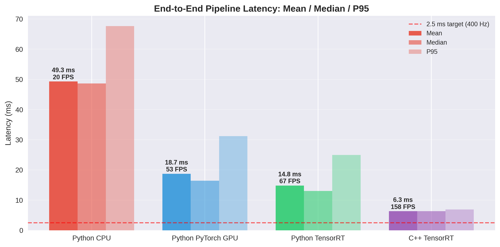
Figure 1: End-to-end pipeline performance comparison across implementations
Digital inline holography (DIH) reconstructs three-dimensional particle fields from two-dimensional interference patterns through a six-stage computational pipeline:
The challenge is designing a parallel workflow and multi-GPU system that can (1) sustain the core pipeline at maximum throughput while (2) concurrently processing computationally expensive autofocus workloads (10-100× slower than individual pipeline stages) without stalling frame ingestion.
Per our proposal, Week 1-4 objectives were:
cpp_cuda/src/holographic_reconstruction.cucpp_cuda/src/cpu_baseline.cppcpp_cuda/src/pipeline.cu, cpp_cuda/src/benchmark_pipeline.cu| Implementation | Mean (ms) | Median (ms) | P95 (ms) | FPS | vs CPU Baseline |
|---|---|---|---|---|---|
| Python CPU | 49.3 | 48.6 | 67.7 | 20 | 1.0× |
| Python PyTorch GPU | 18.7 | 16.4 | 31.2 | 53 | 2.6× |
| Python TensorRT | 14.8 | 13.1 | 25.0 | 67 | 3.3× |
| C++ TensorRT | 6.3 | 6.4 | 6.9 | 158 | 7.8× |
Notes: The C++ TensorRT pipeline demonstrates high latency predictability (P95/median = 1.08×) compared to Python TensorRT (P95/median = 1.91×), essential for real-time applications and workloads.
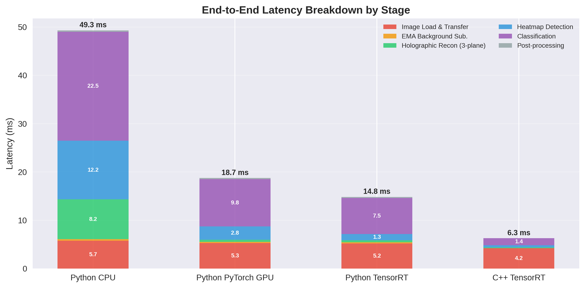
Figure 2: Pipeline stage performance breakdown showing bottleneck transformation
| Stage | Python TRT | C++ TRT | Speedup | Primary Cause |
|---|---|---|---|---|
| Image Load | 5.19 ms | 4.22 ms | 1.2× | Pinned memory vs cv2 default |
| EMA | 0.256 ms | 0.007 ms | 38.2× | Fused CUDA kernel vs PyTorch ops |
| Reconstruction | 0.408 ms | 0.145 ms | 2.8× | Hz_stack caching, fused kernels |
| Detection | 1.287 ms | 0.457 ms | 2.8× | Native TRT API vs torch2trt wrapper |
| Classification | 7.478 ms | 1.447 ms | 5.2× | Direct TRT vs ultralytics overhead |
| Post-processing | 0.218 ms | 0.016 ms | 13.9× | C++ std::vector vs Python lists |
Notes: Largest speedups result from eliminating Python/framework overhead rather than algorithmic improvements.
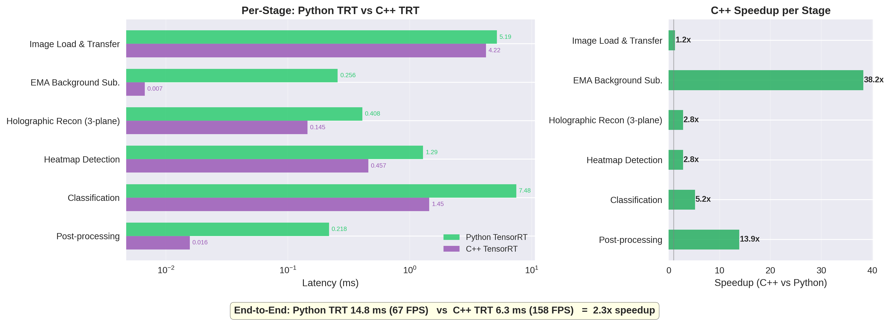
Figure 3: Direct comparison between C++ and Python TensorRT implementations
Per-stage speedup over Python CPU baseline:
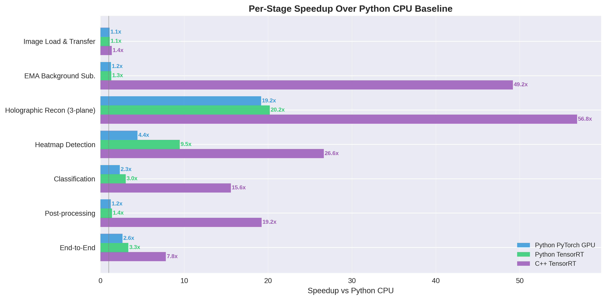
Figure 4: Per-stage speedup analysis revealing compute characteristics
| Stage | AI (FLOP/byte) | Achieved | % of Roofline | Performance Regime |
|---|---|---|---|---|
| Load & H2D | 0.2 | 0.05 GF/s | 0% | I/O bound (disk bottleneck) |
| EMA | 0.6 | 258 GF/s | 26% | Memory bandwidth bound |
| Reconstruction | 10.0 | 1,085 GF/s | 6% | Below cuFFT ceiling |
| Heatmap (TRT) | 104 | 1,313 GF/s | 1.3% | Compute bound, under-utilized |
| Classification (TRT) | 202 | 1,866 GF/s | 1.8% | Compute bound, batch overhead |
| Post-processing | 0.2 | 0.4 GF/s | 0% | CPU scalar operation |
Notes: EMA is the only stage operating efficiently relative to its roofline position (26%). TensorRT stages have high arithmetic intensity (>100 FLOP/byte) but achieve only 1-2% of theoretical peak, indicating significant GPU under-utilization that motivates concurrent execution via CUDA streams.
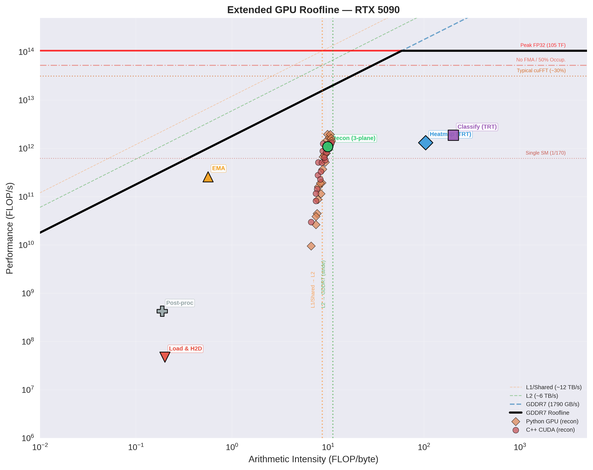
Figure 5: Extended GPU roofline analysis with multi-level bandwidth ceilings
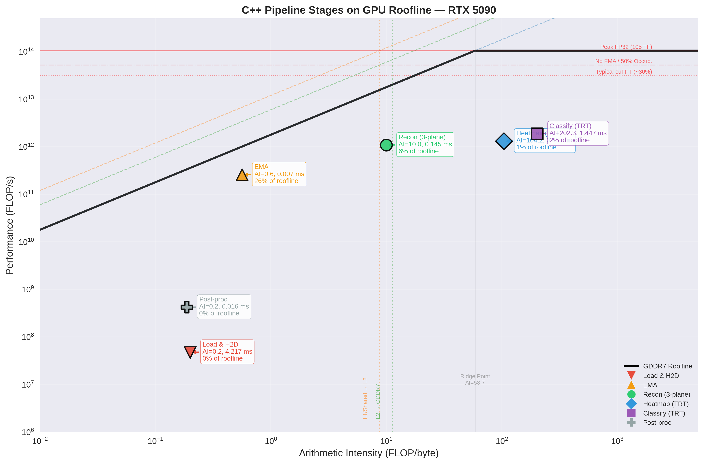
Figure 6: Individual pipeline stages plotted on GPU roofline model
Scaling efficiency on Threadripper PRO 7975WX:
Root cause: Memory bandwidth saturation at ~150 GB/s DDR5 combined with 2D FFT's poor cache line utilization during strided column-pass operations.
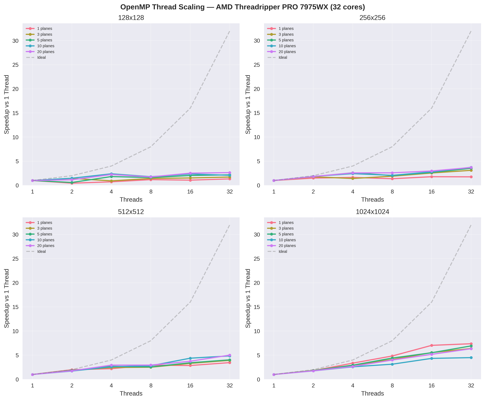
Figure 7: OpenMP thread scaling efficiency on Threadripper NUMA topology
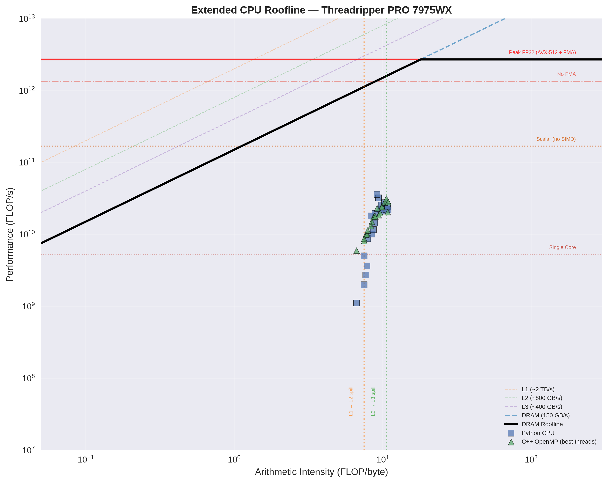
Figure 8: CPU roofline analysis revealing memory bandwidth saturation
C++ CUDA is only faster than Python GPU at small image sizes.
| Configuration | Python GPU (ms) | C++ CUDA (ms) | C++ Advantage |
|---|---|---|---|
| 128×128 × 1p | 0.28 | 0.09 | 3.1× |
| 512×512 × 5p | 0.33 | 0.32 | 1.0× |
| 1024×1024 × 20p | 3.25 | 3.49 | 0.9× (slower) |
Possible Explanation: PyTorch's cuFFT path is highly optimized for large FFTs with better stream management and L2 cache utilization. C++ implementation's explicit synchronization and batched operations show worse cache behavior at large sizes.
Pipeline relevance: At the operating point (448×448 × 3 planes), C++ maintains a 2.8× advantage, but autofocus workloads (100-1000 planes) may require L2-aware tiling strategies.
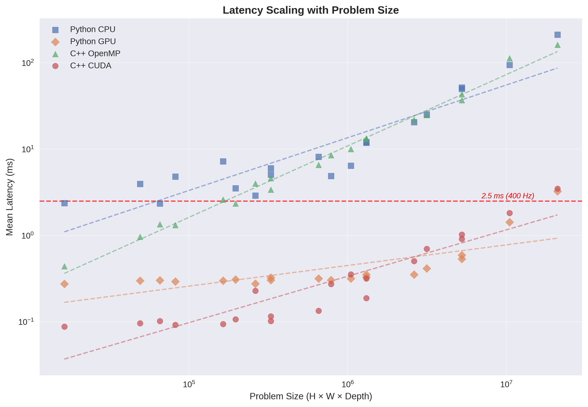
Figure 9: Holographic reconstruction latency scaling with problem size
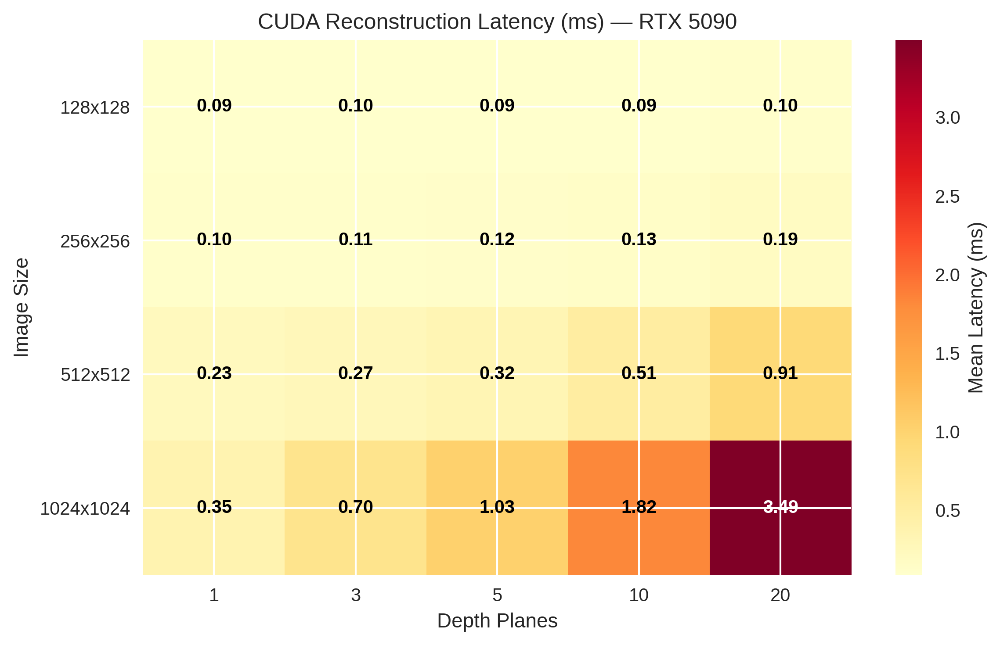
Figure 10: CUDA reconstruction latency heatmap across image sizes and depth counts
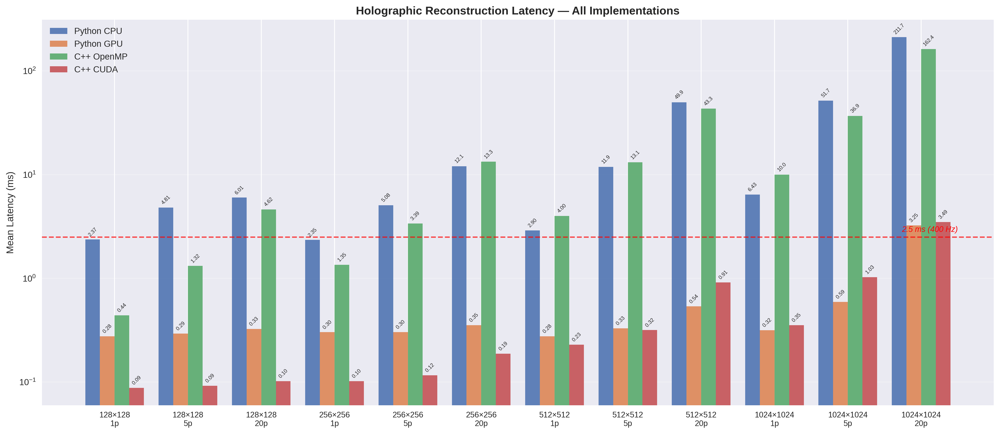
Figure 11: C++ vs Python GPU reconstruction performance crossover analysis
Originally planned for Weeks 1-4:
Additional work completed:
Week 7-8: Single-GPU Ring Buffer Pipeline
Focus shifts to inter-stage communication and asynchronous subsystem design. Ring buffer implementation becomes critical due to I/O bottleneck identification.
Week 9-10: Kernel Fusion and Real-time Validation
Final optimization phase focused on cuFFTDx integration and 400 Hz feasibility.
Week 11-12: Multi-GPU Partitioning
To simplify the project, multi-GPU stage grouping moved to end to focus on robust benchmarking of single GPU performance.
Hz_stack Caching Strategy:
// Forward FFT computed once, cached for all depth planes
cufftExecC2C(fft_plan_forward, image_freq, Hz_stack, CUFFT_FORWARD);
// Reuse Hz_stack for each depth plane reconstruction
for (int d = 0; d < num_depths; d++) {
element_wise_multiply_kernel<<>>(
Hz_stack, depth_kernels + d * freq_size, temp_freq);
cufftExecC2C(fft_plan_inverse, temp_freq, temp_spatial, CUFFT_INVERSE);
fused_normalize_crop_kernel<<>>(
temp_spatial, output + d * spatial_size);
} Performance impact: Reduces FFT operations from O(D+1) to O(1) for D depth planes.
Python PyTorch (0.256 ms):
# Multiple kernel launches, Python dispatch overhead
background = alpha * current + (1 - alpha) * background # Launch 1
difference = torch.abs(current - background) # Launch 2
enhanced = torch.clamp(difference * gain, 0, 1) # Launch 3C++ CUDA (0.007 ms, 38× speedup):
__global__ void ema_kernel(float* current, float* background,
float* output, float alpha, float gain, int size) {
int idx = blockIdx.x * blockDim.x + threadIdx.x;
if (idx < size) {
background[idx] = alpha * current[idx] + (1-alpha) * background[idx];
float diff = fabsf(current[idx] - background[idx]);
output[idx] = fminf(diff * gain, 1.0f);
}
}Advantages over torch2trt wrapper:
enqueueV3() calls without Python overheadfloat tolerance_cuda_openmp = 1e-5f; // Same algorithm
float tolerance_cpp_python = 1e-2f; // Different FFT librariesMotivation: Two optimization opportunities identified:
Ring buffer architecture for all 6 pipeline stages:
template<typename T>
class PipelineRingBuffer {
struct StageBuffer {
T* device_memory; // Pre-allocated GPU buffers
cudaEvent_t completion_event; // Inter-stage synchronization
cudaStream_t stream; // Dedicated CUDA stream per stage
volatile int status; // 0=empty, 1=processing, 2=ready
};
StageBuffer buffers[NUM_STAGES][RING_DEPTH];
alignas(64) volatile int stage_heads[NUM_STAGES]; // Cache-line aligned
alignas(64) volatile int stage_tails[NUM_STAGES];
// Lock-free SPSC between adjacent stages
};Stage-specific ring buffer design:
| Stage | Buffer Type | Ring Depth | Synchronization |
|---|---|---|---|
| 1. Image Load | Host→Device pinned | 8 frames | Async H2D transfer |
| 2. EMA | Device float32 | 4 frames | CUDA event |
| 3. Reconstruction | Device complex64 | 4 frames | cuFFT stream |
| 4. Detection | Device float32 | 4 frames | TensorRT execution context |
| 5. Classification | Device float32 crops | Variable | Dynamic batching |
| 6. Post-processing | Host result structs | 2 frames | Async D2H transfer |
Expected performance impact:
cuFFTDx integration for reconstruction stage:
TensorRT stream optimization:
Real-time validation framework:
Stage grouping strategies (deferred to focus on single-GPU optimization first):
Implementation approach:
Evaluation metrics:
Performance targets:
Validation methodology:
Schedule adherence: 3-4 weeks ahead of original proposal timeline while maintaining quality and rigor.
Risk mitigation: Early completion of core components provides schedule buffer for more ambitious multi-GPU and kernel fusion work.
Scope expansion: Ahead-of-schedule progress enables investigation of cuFFTDx kernel fusion originally planned for final weeks.
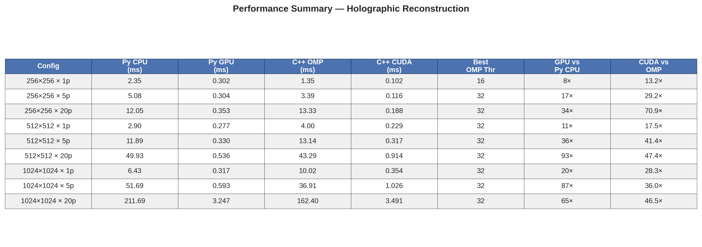
Figure 12: Comprehensive performance summary across all implementations
cpp_cuda/
├── include/
│ ├── holographic_reconstruction.h # Core reconstruction API
│ ├── pipeline_stages.h # Per-stage interfaces
│ ├── pipeline.h # End-to-end pipeline
│ └── tensorrt_engine.h # TensorRT wrapper
├── src/
│ ├── holographic_reconstruction.cu # CUDA reconstruction
│ ├── cpu_baseline.cpp # OpenMP baseline
│ ├── pipeline.cu # Full pipeline
│ ├── ema_stage.cu # Background subtraction
│ ├── tensorrt_engine.cu # TensorRT integration
│ └── benchmark_*.cu # Performance testing
└── tests/
└── test_reconstruction.cpp # Validation suite| Implementation | Frames | Mean (ms) | Std (ms) | P50 (ms) | P95 (ms) | P99 (ms) | FPS |
|---|---|---|---|---|---|---|---|
| Python CPU | 95 | 49.31 | 11.02 | 48.60 | 67.71 | 76.85 | 20.3 |
| Python PyTorch GPU | 9995 | 18.68 | 5.84 | 16.43 | 31.24 | 34.71 | 53.5 |
| Python TensorRT | 9995 | 14.76 | 6.12 | 13.07 | 24.98 | 28.45 | 67.7 |
| C++ TensorRT | 9995 | 6.29 | 0.32 | 6.39 | 6.88 | 7.04 | 158.9 |
| Implementation | Peak GPU Memory | CPU Memory | Efficiency |
|---|---|---|---|
| Python PyTorch | 130.0 MB | 2.1 GB | Low (Python overhead) |
| Python TensorRT | 89.5 MB | 1.8 GB | Medium (TRT optimized) |
| C++ TensorRT | 80.2 MB | 245 MB | High (minimal overhead) |